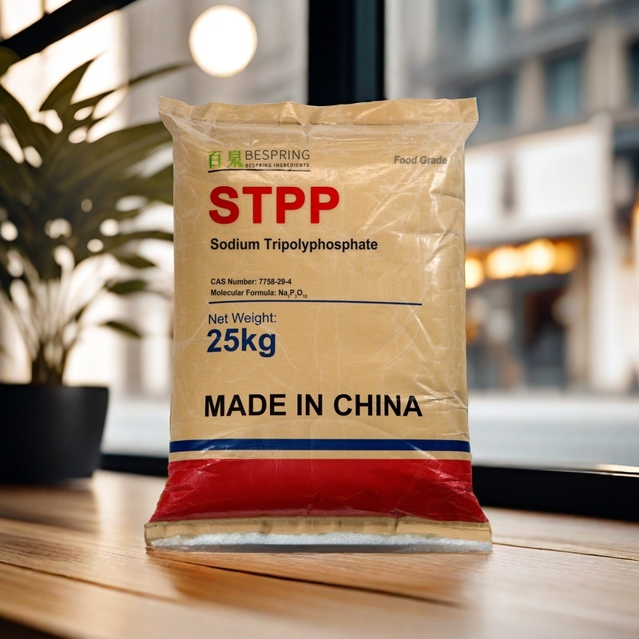
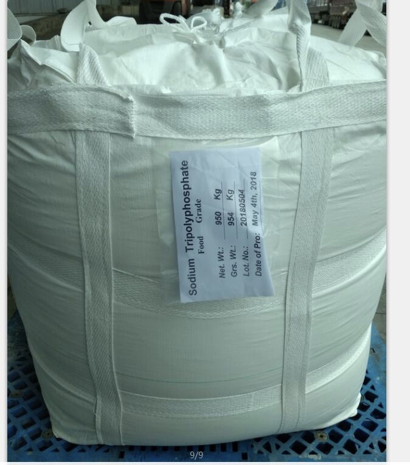
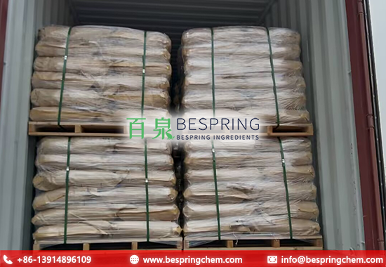

Gestión de humedad
Mida retención y pérdidas en el alimento terminado.
Ingrediente alimentario · Evaluación técnica B2B
Seleccione STPP según su función en retención de agua, textura y control de iones, con pruebas en la formulación final.
Indique aplicación, cantidad, destino y documentos requeridos para evaluar una oferta concreta.

Identidad del producto
El tripolifosfato de sodio es un polifosfato cuya eficacia depende del grado, la formulación y las condiciones de proceso.
Función tecnológica
Puede ayudar a gestionar humedad, textura y iones en sistemas autorizados. Compruebe pH, solubilidad y respuesta de la matriz.
Mida retención y pérdidas en el alimento terminado.
Compare firmeza y cohesión bajo el proceso real.
Compruebe estabilidad de la fase grasa en el proceso.
Observe el efecto de calcio y dureza del agua.
Aplicaciones
Se evalúa en carne, aves, productos marinos y otras categorías permitidas. La dosis debe determinarse mediante pruebas y normas locales.
Registre rendimiento, purga y textura en pruebas controladas.
Controle emulsión, pH y respuesta de proteínas.
Datos de referencia
La tabla presenta límites de referencia. Verifique métodos, identidad y COA del lote antes de aprobar la oferta.
| Parámetro de ensayo | Especificación | Expresión |
|---|---|---|
| Ensayo (Na₅P₃O₁₀) | ≥ 85,0 | % |
| P₂O₅ | 56,0–58,0 | % |
| Materia insoluble en agua | ≤ 0,1 | % |
| Fluoruro | ≤ 50 | ppm |
| Arsénico | ≤ 3 | ppm |
| Metales pesados | ≤ 10 | ppm |
| Plomo | ≤ 4 | ppm |
| Aspecto | Gránulos o polvo blancos | Inspección visual |
Comparación de límites: 50 ppm en masa equivale a 50 mg/kg, el límite de fluoruro de la monografía JECFA de STPP. La especificación europea E451(i) establece 10 mg/kg expresados como flúor. El límite comercial es menos exigente que el europeo; la conformidad completa requiere comparar todos los criterios y métodos con la especificación y el COA del grado ofrecido.
Homologación de proveedor
Revise norma alimentaria aplicable, ensayo, granulometría, impurezas, documentos y requisitos de importación.
Verifique denominación, grado y uso permitido.
Alinee ensayo, impurezas y procedimientos analíticos.
Compruebe granulometría, disolución y condiciones de incorporación.
Confirme COA, envase y plan de carga antes de aprobar.
Embalaje y logística
Las fotografías ilustran un FIBC y carga en contenedor. El formato, el peso y el patrón de palés se confirman para el plan de envío aprobado.


Almacenamiento
Proteja el material de humedad y contaminación; siga las condiciones de almacenamiento de la ficha de seguridad.
Recursos relacionados
Evalúe la función de cada sal en la receta antes de sustituirla.
Consultas del comprador
Una misma dosis no garantiza el mismo resultado en todas las matrices.
Se evalúa por retención de agua, textura y gestión de iones en sistemas permitidos.
Confirme la denominación y el uso autorizado del mercado de destino en la documentación aplicable.
No. Es una especificación de referencia; el COA presenta resultados del lote.
El límite comercial de fluoruro coincide con los 50 mg/kg de la monografía JECFA citada, pero no demuestra conformidad completa. E451(i) en la UE exige 10 mg/kg; compare la especificación completa y el COA con el mercado de destino.
No. Mantenga rutas de homologación, impurezas y documentos separados.
Las fotos muestran formatos de referencia; acuerde peso, envase y plan de carga para cada envío.
Indique uso, especificación, cantidad, envase, destino y documentación.
Consulte disponibilidad para el grado concreto antes de planificar la prueba.
Consulta de suministro
Indique la aplicación, el grado, la cantidad, el país de destino y los documentos que necesita. Confirmaremos una oferta concreta.